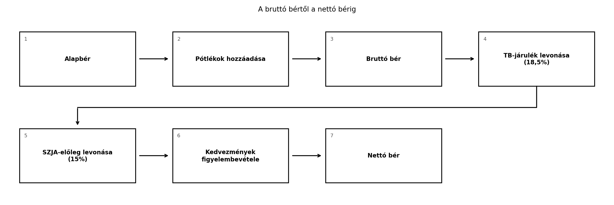

Kata másodéves pék tanuló. A nyári szünetben egy kisüzemi pékség hajnali műszakot ajánl neki, a szomszéd cukrászda „számlás megbízást”, egy ismerős pedig „zsebbe” fizetne. A munkaszerződésben 350 000 Ft bruttó bér áll, de Kata a hónap végén jóval kevesebbet kap a bankszámlájára, és nem érti, miért. Ráadásul az első napon a műszakvezető olyan iratokat kér, amelyek nincsenek nála.
Ebben az alfejezetben a Munkajogi alapok és munkaviszony alfejezetben tanult munkaviszonyt összeveted a többi foglalkoztatási formával, megtanulod, milyen iratok kellenek a munkába lépéshez és a kilépéshez, és lépésről lépésre kiszámolod, hogyan lesz a bruttó bérből nettó bér. A konkrét adó- és járulékkulcsok, összeghatárok évről évre változhatnak: a könyv tanulási példákkal számol, és minden ilyen számot jelöl.
A bérjegyzék (bérpapír, fizetési jegyzék) felülről lefelé olvasva ugyanazt a sort követi: először összeadódnak a bérelemek, majd levonják a munkavállaló terheit, és ami marad, az a nettó bér.

Ha a bruttó bér 100 Ft, és nincs kedvezmény, akkor a példa szerinti kulcsokkal 18,5 Ft járulékot és 15 Ft adóelőleget vonnak le, tehát 66,5 Ft marad. Ezt a „100-ból 66,5” arányt érdemes fejben tartani: gyors ellenőrzésre kiváló.
Ugyanazt a munkát – például hajnali kiflisütést – többféle jogviszonyban is el lehet végezni, de a jogok, a védelem és a terhek nagyon különböznek.
Definíció. Munkaviszony: a munkavállaló a munkáltató irányítása alatt, személyesen, díjazás ellenében végez munkát, munkaszerződés alapján (lásd az előző alfejezetet). Jár neki a munkaidő-, pihenőidő-, szabadság- és pótlékszabály védelme.
Definíció. Megbízási jogviszony: a megbízott egy meghatározott feladat gondos ellátását vállalja, a munkavégzés módját nagyrészt maga szervezi; a jogviszonyt a polgári jog szabályozza, nem a munka törvénykönyve (ellenőrizendő: Ptk. megbízási szerződés szabályai).
Definíció. Vállalkozási jogviszony: a vállalkozó egy eredmény (például 500 db mézeskalács legyártása egy rendezvényre) létrehozását vállalja saját kockázatára, saját eszközeivel, és számlát ad róla (ellenőrizendő: Ptk. vállalkozási szerződés szabályai).
A döntő kérdés nem a szerződés címe, hanem a valós munkavégzés. Ha valaki rögzített beosztásban, a műszakvezető utasítása szerint, a pékség gépein, folyamatosan dolgozik, az tartalmilag munkaviszony akkor is, ha a papíron „megbízás” áll. Az ilyen színlelt szerződést a hatóság munkaviszonnyá minősítheti át (ellenőrizendő: munkaügyi ellenőrzés gyakorlata).
| Szempont | Munkaviszony | Megbízás | Vállalkozás |
|---|---|---|---|
| Mit vállal? | munkavégzést utasítás szerint | gondos feladatellátást | eredményt |
| Ki irányít? | a munkáltató | részben a megbízott | a vállalkozó |
| Eszközök | a munkáltatóé | megállapodás szerint | a vállalkozóé |
| Szabadság, pótlék | jár (Mt.) | nem jár Mt. alapján | nem jár |
| Jellemző pékségi példa | pék, gépkezelő | alkalmi tanácsadás | rendezvényre bérsütés |
Egyszerűsített foglalkoztatás. Rövid, alkalmi munkára a jogszabály egyszerűsített formát enged: kevés papírmunka, napi, egyszerűsített bejelentés és csökkentett, napi összegű közteher. Ilyen az alkalmi munka és az idénymunka. Az alkalmi munkára időkorlátok vonatkoznak (egy munkáltatónál egymást követően legfeljebb néhány nap, havonta és évente korlátozott számú nap), és a közteher összege rögzített napi tétel (ellenőrizendő: az egyszerűsített foglalkoztatásról szóló törvény hatályos napkorlátai és közteher-összegei). Egy pékségben például a karácsonyi csúcsidőszak csomagolási munkája lehet ilyen.
Diákmunka. A nappali tagozatos tanuló gyakran iskolaszövetkezeten keresztül dolgozik: a szövetkezet a tag, a pékség a szolgáltatás fogadója. Ilyenkor a szövetkezet fizeti a bért, és a terhek kedvezőbbek lehetnek (ellenőrizendő: az iskolaszövetkezeti tagok járulékszabályai). A tanulószerződéses vagy szakképzési munkaszerződéses gyakorlat ettől eltér: azt a szakképzési szabályok rendezik (ellenőrizendő: hatályos szakképzési törvény és rendelet).
Figyelem. Fiatal munkavállaló (18 év alatti) éjszakai munkára és rendkívüli munkára főszabály szerint nem osztható be (ellenőrizendő: Mt. fiatal munkavállalóra vonatkozó szabályai). A pékségben ez közvetlenül érinti a hajnali műszakot: a 17 éves tanuló beosztását ehhez kell igazítani.
Hiba. A „zsebbe fizetés” (bejelentés nélküli munka) nem kedvezmény. Nincs biztosítás, ezért munkabalesetnél nincs ellátás, a ledolgozott idő nem számít bele a nyugdíjba és az álláskeresési ellátás jogosultsági idejébe, és vita esetén nehéz bizonyítani a bért.
Gyakorlat. A munkába lépéskor általában a következőket kérik (ellenőrizendő: a munkáltató és a NAV bejelentési igénye):
A munkáltató a munkaviszony kezdete előtt bejelenti a biztosítást az adóhatóságnak (ellenőrizendő: a NAV bejelentési nyomtatványa és határideje). Te ezt utólag ellenőrizheted az ügyfélkapus adatlekérdezéssel.
Higiénia. Élelmiszerrel csak egészséges ember dolgozhat. Hasmenés, hányás, láz, gennyes seb vagy fertőző betegség esetén a munkába lépés napján is jelezd a műszakvezetőnek; ilyenkor élelmiszerrel nem dolgozhatsz (lásd Személyi és üzemi higiénia).
Gyakorlat. A munkaviszony megszűnésekor a munkáltató igazolásokat ad ki. Ezek tipikusan: igazolás a munkaviszonyról (időtartam, munkakör, kiadott szabadság, levonások), a társadalombiztosítási igazolás, a jövedelemről és a levont adóelőlegről szóló igazolás, valamint az álláskeresési ellátáshoz szükséges munkáltatói igazolás (ellenőrizendő: Mt. és a foglalkoztatási szabályok szerinti pontos igazoláslista). Ezeket őrizd meg: a következő alfejezetben látod, hogy az álláskeresési ellátás ezekből indul.
Definíció. Bruttó bér: a munkáltató által elszámolt teljes munkabér (alapbér + pótlékok + egyéb bérelemek), a levonások előtt.
Definíció. Nettó bér: a bruttó bérből a munkavállalót terhelő járulékok és az adóelőleg levonása után kifizetett összeg.
Definíció. Járulék: a társadalombiztosítás (egészségbiztosítás, nyugdíjbiztosítás, munkaerőpiaci ellátások) finanszírozására fizetett kötelező befizetés. Adó: az állam általános bevétele, a bér esetén a személyi jövedelemadó (SZJA), amelyet a munkáltató előlegként levon.
A pékség, mint munkáltató, kétféle terhet kezel:
Összefüggés.
Kedvezmény nélkül, a példa szerinti kulcsokkal: nettó = bruttó · (1 − 0,185 − 0,15) = bruttó · 0,665.
Kedvezmények. Az SZJA-előleget csökkentheti például a 25 év alatti fiatalok kedvezménye (egy jövedelemhatárig nem kell SZJA-t fizetni), egyes anyákat megillető kedvezmények és a családi kedvezmény (ellenőrizendő: a kedvezmények hatályos feltételei és összeghatárai). A kedvezmény a járulékot főszabály szerint nem csökkenti.
Továbbvitt eredmény. A bruttó bér és a levonások rendszere az alapja a következő, Álláskeresés és munkanélküliség alfejezetben az álláskeresési ellátás számításának: az ellátás a korábbi bruttó keresetből indul.
Adott: 30 éves pék, bruttó bér 350 000 Ft/hó, nincs kedvezmény. Kulcsok (tanulási példa, ellenőrizendő): TB-járulék 18,5%, SZJA 15%, szociális hozzájárulási adó 13%.
Keresett: a nettó bér és a munkáltató teljes bérköltsége.
Munkáltatói oldal:
Ellenőrzés. Ft, egyezik. A pékség egy ilyen dolgozóért havonta kb. 395 500 Ft-ot fizet ki, a dolgozó kb. 233 000 Ft-ot kap kézhez. ∎
Adott: 22 éves pék, alapbér 300 000 Ft/hó (tanulási példa, ellenőrizendő: hatályos garantált bérminimum), a hónapban 80 óra éjszakai munka. Éjszakai pótlék 15%, osztószám 174 óra, mint a Munkajogi alapok és munkaviszony alfejezetben (ellenőrizendő). A bruttó bér a 25 év alatti kedvezmény jövedelemhatára alatt van (ellenőrizendő).
Keresett: bruttó és nettó bér; összevetés egy 26 éves kollégával.
Ha ugyanez a bér egy 26 éves kollégáé: SZJA Ft, nettó Ft.
Ellenőrzés. A különbség pontosan az SZJA: Ft. A munkáltató terhe mindkettőnél ugyanaz ( Ft), mert a kedvezmény a munkavállalói adót érinti. A forintra kerekítést a bérszámfejtő tételenként végzi. ∎
Adott: 20 éves, nappali tagozatos diák, iskolaszövetkezeti tag, nyáron 60 órát csomagol egy pékségben 1 900 Ft/h órabérrel. Feltételezzük (tanulási példa, ellenőrizendő: iskolaszövetkezeti járulékszabály), hogy a diák után nem kell 18,5% TB-járulékot levonni, és a 25 év alatti kedvezmény miatt SZJA sincs.
Ellenőrzés. A diáknál a bruttó és a nettó a feltevés miatt egyezik; ha a járulékszabály mást mond, a nettó Ft lenne. Ezért kell a feltételt mindig ellenőrizni. ∎
A levont járulék nem „elveszett pénz”: ebből jár az ellátás, ha baj van.
Szabály. A bejelentett biztosítási idő szolgálati időnek számít; ha a járulékalapot képező kereset a minimálbérnél kisebb (például részmunkaidő, alacsony megbízási díj), a szolgálati idő csak arányosan számít (ellenőrizendő: a társadalombiztosítási nyugellátásról szóló törvény). Évente érdemes a nyugdíjbiztosítási adatokat lekérdezni, és ha hiányzik egy időszak, a munkáltatói igazolással pótolni.
Vissza Katához. (Szemléltető megoldás.) Ha Kata 18 év alatti, hajnali (22 és 6 óra közötti) műszakba nem osztható be (lásd az éjszakai munka szabályát); diákként iskolaszövetkezeten át vagy munkaszerződéssel dolgozhat (ellenőrizendő: hatályos munkajogi szabályok). A „zsebbe” fizetés bejelentetlen munka: nincs biztosítási jogviszony, nincs balesetvédelem, szolgálati idő, és jogellenes. A 350 000 Ft bruttóból – 25 év alatti munkavállalóként, tanulási kulcsokkal, csak a társadalombiztosítási járulékot figyelembe véve – kb. 285 250 Ft a nettó (ellenőrizendő: hatályos adó- és járulékkulcsok, kedvezmények). A munkába lépéskor kért iratokat az „Iratok a munkába lépéskor és a kilépéskor” szakasz sorolja fel.
Valós eset. (Szemléltető, összetett eset.) Egy 23 éves pék két éven át „megbízási szerződéssel” dolgozott egy kisüzemben: hetente öt éjszaka, 22-től 6-ig, a tulajdonos beosztása szerint, a pékség gépein. Amikor a dagasztógép tisztításakor megsérült a keze, kiderült, hogy a megbízás miatt nem jár neki szabadság és éjszakai pótlék, és a balesetet sem rögzítették szabályosan. Munkaügyi tanácsadás után kiderült, hogy a munkavégzés minden jegye munkaviszonyra utal: utasítás, beosztás, a munkáltató eszközei, folyamatosság.
Tanulság. A szerződés címe helyett a valós munkavégzés számít. Aláírás előtt kérdezd meg: ki osztja be az időmet, kinek az eszközével dolgozom, eredményt vagy munkát vállalok? A balesetet a gép leállítása, áramtalanítása és újraindítás elleni biztosítása nélküli tisztítás okozta; ez jogviszonytól függetlenül tilos (lásd Biztonságos tisztítás, karbantartás és gépápolás).
Hiba. A nettó bért a bruttóból egyetlen „kb. harmad” levonással becsüli valaki, és nem veszi figyelembe a kedvezményt. Ok: a levonások összetevőit nem ismeri. Helyes gyakorlat: külön számold a járulékot és az SZJA-t, és nézd meg, jár-e kedvezmény.
Hiba. A 25 év alatti dolgozó járulékát is nullának veszi. Ok: összekeveri az adót és a járulékot. Helyes gyakorlat: a fiatalok kedvezménye az SZJA-t érinti, a TB-járulékot nem (ellenőrizendő).
Hiba. Kilépéskor nem kéri el az igazolásokat. Ok: sietség. Helyes gyakorlat: az utolsó munkanapon ellenőrizd, hogy minden igazolást megkaptál; nélkülük késhet az álláskeresési ellátás.
Hiba. Folyamatos, beosztás szerinti munkára megbízási vagy vállalkozási szerződést fogad el. Ok: magasabb nettó ígérete. Helyes gyakorlat: a valós jogviszonynak megfelelő szerződést kérj.
1. feladat (A) Döntsd el, milyen jogviszony illik a helyzethez: (a) a pék hetente öt éjszaka dolgozik beosztás szerint; (b) egy pék saját konyhájában, saját eszközeivel 300 db pogácsát süt egy esküvőre, és számlát ad; (c) egy tapasztalt pék két alkalommal tanácsot ad egy új kemence beállításához.
2. feladat (A) Sorolj fel öt iratot, amelyet munkába lépéskor kérhetnek, és hármat, amelyet kilépéskor kapsz.
3. feladat (B) Egy 35 éves pék bruttó bére 320 000 Ft, kedvezmény nincs. Számold ki a TB-járulékot, az SZJA-előleget, a nettó bért és a munkáltató teljes bérköltségét (18,5%, 15%, 13% – tanulási példa).
4. feladat (B) Egy 30 éves pék legalább 266 000 Ft nettót szeretne. Mekkora bruttó bérrel jön ez ki kedvezmény nélkül a példa szerinti kulcsokkal?
5. feladat (C) Egy pékség „megbízási szerződést” ajánl napi 8 órára, hajnali beosztással, a pékség gépein, a műszakvezető utasítása szerint. Elemezd, milyen jogviszony ez valójában, és mit veszít a dolgozó, ha elfogadja.
6. feladat (D) Ellenőrizd a bérjegyzéket! Ádám 24 éves pék (a 25 év alatti kedvezmény jövedelemhatára alatt), alapbére 290 000 Ft (tanulási példa, ellenőrizendő: hatályos garantált bérminimum), a hónapban 60 óra éjszakai munkát végzett (15% pótlék, osztószám 174). A bérjegyzéken: bruttó 305 000 Ft, TB-járulék 56 425 Ft, SZJA-előleg 45 750 Ft, nettó 202 825 Ft. Hol a hiba, és mennyi lenne a helyes nettó?
1. feladat megoldása. (a) munkaviszony: utasítás, beosztás, folyamatosság; (b) vállalkozás: eredmény, saját eszköz, számla; (c) megbízás: alkalmi, gondos feladatellátás, nem eredményre szól.
2. feladat megoldása. Belépéskor: személyi igazolvány, lakcímigazolvány, adóazonosító jel, TAJ-szám, bankszámlaszám, bizonyítvány, foglalkozás-egészségügyi alkalmasság. Kilépéskor: igazolás a munkaviszonyról, igazolás a jövedelemről és a levont adóelőlegről, munkáltatói igazolás az álláskeresési ellátáshoz, TB-igazolás (ellenőrizendő a pontos lista).
3. feladat megoldása.
Ellenőrzés: Ft. ∎
4. feladat megoldása. Kedvezmény nélkül nettó = bruttó · 0,665, tehát
Visszaszámolás: járulék 74 000 Ft, SZJA 60 000 Ft, Ft. ∎
5. feladat megoldása. Minden ismérv munkaviszonyra utal: személyes munkavégzés, rögzített beosztás, utasítás, a munkáltató eszközei, folyamatosság. Ez színlelt megbízás. A dolgozó elveszítheti a szabadságot, az éjszakai pótlékot, a munkaidő- és pihenőidő-védelmet, a felmondási védelmet és a végkielégítést; a baleseti és biztosítási helyzete is bizonytalanabb. Helyes lépés: munkaszerződést kérni, kétség esetén munkaügyi tanácsot kérni (ellenőrizendő: illetékes munkaügyi hatóság).
6. feladat megoldása. A bruttó helyes: órabér Ft/h, pótlék Ft, bruttó Ft. A járulék is helyes: Ft. A hiba az SZJA-előleg: Ádám 24 éves, a kedvezmény miatt SZJA-előleget nem kellene levonni, mégis Ft-ot vontak le. Helyes nettó: Ft, vagyis 45 750 Ft-tal több. Teendő: jelezni a bérszámfejtőnek; lehet, hogy a kedvezményről szóló adatot nem rögzítették (ellenőrizendő: a kedvezmény igénylésének módja). ∎
Ugyanaz a pékségi munka többféle jogviszonyban végezhető: a munkaviszony (utasítás, beosztás, a munkáltató eszközei) a Munka törvénykönyve védelmét adja; a megbízás gondos feladatellátás, a vállalkozás eredmény létrehozása saját kockázatra; az egyszerűsített foglalkoztatás és a diákmunka rövid munkára szól, saját szabályokkal. A szerződés címe helyett a valós munkavégzés dönt. Belépéskor személyazonosító, adóazonosító, TAJ-szám, bankszámla, bizonyítvány és egészségi alkalmasság kell; kilépéskor kérd el az igazolásokat. Továbbvitt eredmény: nettó bér = bruttó bér − TB-járulék − SZJA-előleg; kedvezmény nélkül a példa szerinti kulcsokkal (18,5% és 15%) nettó = bruttó · 0,665; a munkáltató terhe bruttó · 1,13 (13% szociális hozzájárulási adó). A 25 év alatti kedvezmény az SZJA-t csökkenti, a járulékot nem. Minden kulcs tanulási példa (ellenőrizendő: NAV). A járulékból táppénz, baleseti ellátás, családtámogatás és nyugdíj jár; a bruttó kereset az álláskeresési ellátás alapja is.